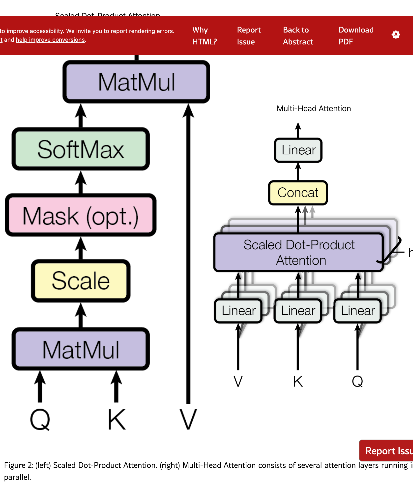

📖 Attention Is All You Need
深度解析系列
第 3 頁 (1/2)：Model Architecture - Attention 機制
1. Encoder-Decoder 整體架構
大多數具有競爭力的神經序列轉換模型都採用編碼器-解碼器結構 [5, 2, 35]。在這裡，編碼器將輸入的符號表示序列 $(x_1, ..., x_n)$ 映射到連續表示序列 $\mathbf{z} = (z_1, ..., z_n)$。給定 $\mathbf{z}$，解碼器然後一次生成一個元素，產生輸出序列 $(y_1, ..., y_m)$。
🏗️ Encoder-Decoder 架構解析
核心概念：兩段式處理
| 階段 | 輸入 | 輸出 | 功能 |
|---|---|---|---|
| Encoder (編碼器) | 離散符號序列 $(x_1, x_2, ..., x_n)$ 例：[The, cat, sat] |
連續向量序列 $\mathbf{z} = (z_1, ..., z_n)$ 每個 $z_i \in \mathbb{R}^{512}$ |
理解輸入的語義 |
| Decoder (解碼器) | Encoder 的輸出 $\mathbf{z}$ + 已生成的前綴 $(y_1, ..., y_{i-1})$ |
下一個符號 $y_i$ 一次生成一個詞 |
根據語義生成輸出 |
🔧 雙重類比：Encoder-Decoder
💡 生活類比：翻譯員的工作流程
情境：一位翻譯員要把英文演講翻譯成中文。
- Encoder (理解階段)：翻譯員先完整聽完英文演講，在腦海中形成對整段話的理解（語義表示 $\mathbf{z}$）。
- Decoder (表達階段)：基於理解，一句一句用中文表達出來，每說一句都參考前面已經說過的內容。
🤖 AI 體驗類比：與 ChatGPT 對話
情境：你問 ChatGPT「請幫我寫一首關於秋天的詩」。
- Encoder (讀題)：模型先讀取你的整個 Prompt，將「寫詩」、「秋天」等需求轉換成向量理解。
- Decoder (生成)：模型開始逐字生成回答，「秋」、「風」、「吹」、「起」... 每個字都是基於前面的字和你原本的 Prompt 生成的。
🔧 工程類比：編譯器的兩階段處理
// Encoder: Lexer + Parser (理解原始碼)
source_code = "int x = 5;"
tokens = lexer(source_code) // [INT, IDENTIFIER, ASSIGN, NUMBER]
AST = parser(tokens) // 抽象語法樹 (類比為 z)
// Decoder: Code Generator (生成目標碼)
assembly = []
for node in AST:
assembly.append(generate(node, previous_context)) // 逐行生成
output = "\n".join(assembly)在每一步，模型都是自回歸的（auto-regressive） [10]，在生成下一個符號時，會將先前生成的符號作為額外輸入。
🎯 Auto-Regressive（自回歸）機制
定義：下一個輸出依賴於前面所有已生成的輸出。
生成過程範例（英翻中）：
| 步驟 | 已生成內容 | 預測下一個詞 |
|---|---|---|
| 1 | [START] | → "這" |
| 2 | [START, 這] | → "隻" |
| 3 | [START, 這, 隻] | → "貓" |
| 4 | [START, 這, 隻, 貓] | → "坐" |
關鍵：每一步都「回顧」(regress) 前面的生成結果。
📐 Figure 2: Attention 機制視覺化
圖 2：（左）Scaled Dot-Product Attention 的計算流程；（右）Multi-Head Attention 由多個並行的 Attention 層組成
🔍 圖片詳細解說
📍 左圖：Scaled Dot-Product Attention（縮放點積注意力）
由下往上的計算流程：

🔍 Self-Attention 運作視覺化
句子 "The cat sat on the mat" 的注意力權重
線條粗細代表注意力強度 (cat→sat, sat→on, on→mat)
顏色從藍(弱)到紅(強),展示每個詞如何關注其他詞！
- 輸入：Q, K, V
- Q (Query)：查詢向量，「我想找什麼」
- K (Key)：鍵向量，「我能提供什麼資訊」
- V (Value)：值向量，「我實際的內容」
- MatMul（矩陣乘法）：Q × K
- 計算 Query 和 Key 的相似度
- 結果：注意力分數矩陣（每個位置對每個位置的「關注度」）
- Scale（縮放）：除以 √d_k
- d_k 是 Key 的維度（例如 64）
- 目的：防止點積結果過大，避免 softmax 梯度消失
- Mask (opt.)（遮罩，可選）
- 用於 Decoder 的 Masked Attention
- 將「未來」位置的分數設為 -∞，確保生成時不會偷看
- SoftMax（歸一化）
- 將注意力分數轉換為機率分佈（總和為 1）
- 結果：注意力權重矩陣
- MatMul（加權求和）：Attention × V
- 用注意力權重對 Value 進行加權平均
- 結果：最終的 Attention 輸出
📍 右圖：Multi-Head Attention（多頭注意力）
🌈 Multi-Head Attention 並行處理
8 個注意力頭同時處理相同輸入,每個用不同顏色表示
Head 1:語法關係 | Head 2:語義關係 | Head 3:位置關係...
最後合併所有頭的輸出 → 更豐富的表達！
由下往上的計算流程：
- 輸入：V, K, Q（注意順序：Value, Key, Query）
- Linear（線性投影）× 3
- 將 Q, K, V 各自通過 h 個不同的線性變換（h = 頭數，論文中 h=8）
- 每個頭使用不同的權重矩陣 W^Q, W^K, W^V
- 結果：每個頭得到自己的 Q_i, K_i, V_i（維度降低為 d_model/h = 64）
- Scaled Dot-Product Attention × h
- h 個頭並行計算各自的 Attention（使用左圖的流程）
- 每個頭學習不同的「注意力模式」（例如：語法關係、語義關係）
- Concat（拼接）
- 將 h 個頭的輸出拼接起來
- 結果：恢復到原始維度 d_model = 512
- Linear（最終投影）
- 通過一個線性層融合所有頭的資訊
- 權重矩陣 W^O
📍 為什麼需要 Multi-Head？
- ✅ 多角度關注：不同的頭可以學習不同類型的依賴關係
- Head 1：可能關注「主詞-動詞」的語法關係
- Head 2：可能關注「形容詞-名詞」的修飾關係
- Head 3：可能關注長距離的語義關係
- ✅ 表達能力更強：單一 Attention 可能會「平均化」所有資訊，Multi-Head 可以保留更多細節
- ✅ 計算效率：雖然有 h 個頭，但每個頭的維度降為 d_k = d_model/h，總計算量與單頭相當
📍 實際參數（論文設定）
| 參數 | 數值 | 說明 |
|---|---|---|
| h（頭數） | 8 | 並行運行 8 個 Attention |
| d_model | 512 | 模型維度 |
| d_k（Key 維度） | 64 | = d_model / h = 512/8 |
| d_v（Value 維度） | 64 | = d_model / h = 512/8 |
🤖 AI 體驗連結：ChatGPT 如何理解代名詞？
當你對 ChatGPT 說：「蘋果很好吃，但我最近不常吃它。」
Self-Attention 在做什麼？
- 當模型讀到「它」這個字時，它的 Query 向量會去搜尋前面所有字的 Key。
- 「蘋果」的 Key 會和「它」的 Query 最匹配（分數最高）。
- 因此，「它」的 Value 就會吸收大量「蘋果」的資訊。
這就是為什麼 ChatGPT 知道「它」指的就是蘋果，而不是別的東西。這就是 Coreference Resolution（指代消解）。
2. Scaled Dot-Product Attention（縮放點積注意力）
❓ 等等...Q/K/V 是怎麼來的？
疑問：上面說輸入是「向量」，但這裡突然出現 Q、K、V 三組向量？
答案：它們是從原始輸入向量「轉換」出來的！
💡 生活類比：一人分飾三角
想像你在圖書館：
- 作為讀者：你拿著「需求清單」(Query) 去找書
- 作為書架標籤：你自己也被貼上「關鍵字」(Key) 供別人搜尋
- 作為書本內容：你自己也有「實際內容」(Value) 可被提取
關鍵：同一個「詞向量」要扮演三種角色！
💡 補充類比：8 位專家看同一份履歷
情境：你投履歷應徵工作，8 位面試官（8 個 heads）同時審查你的履歷。
- 你的履歷：一份完整的 512 項資料（學歷、經歷、技能...）
- 面試官 1（Head 1）：
只關注「技術能力」相關的 64 項特徵
→ 從你的 512 項資料中，用自己的「篩選標準」(W_1^Q, W_1^K, W_1^V) 提取出 64 項 - 面試官 2（Head 2）：
只關注「團隊合作」相關的 64 項特徵
→ 同樣是你的 512 項資料，但用不同的「篩選標準」(W_2^Q, W_2^K, W_2^V) 提取出另外 64 項 - 面試官 3~8：各自關注不同面向（領導力、創新力、穩定性...）
關鍵洞察：
- ❌ 不是把履歷切成 8 份，每人看 1/8
- ✅ 而是8 位面試官都看完整的履歷，但各自關注不同面向
- ✅ 每位面試官用自己的「評估標準」從 512 項中提取關鍵的 64 項
- ✅ 最後綜合 8 位面試官的意見（8×64=512）做出決策
🔧 工程實作：矩陣轉換
步驟 0：原始輸入向量是什麼？
在真實情境中，「原始輸入向量」指的是：
// 真實例子：處理句子 "The cat sat"
句子：["The", "cat", "sat"]
// 步驟 1：Embedding（第 3-2 頁會詳細解釋）
"The" → embedding_table["The"] → [0.12, -0.34, 0.56, ..., 0.78] // 512 個數字
"cat" → embedding_table["cat"] → [0.23, 0.45, -0.12, ..., 0.91] // 512 個數字
"sat" → embedding_table["sat"] → [-0.11, 0.67, 0.34, ..., -0.22] // 512 個數字
// 步驟 2：加上 Positional Encoding（告訴模型位置資訊）
"The" → [0.12, -0.34, ...] + [pos_0] = x_0 (512 維)
"cat" → [0.23, 0.45, ...] + [pos_1] = x_1 (512 維)
"sat" → [-0.11, 0.67, ...] + [pos_2] = x_2 (512 維)
// 這就是「原始輸入向量」！每個詞都是 512 維的向量步驟 1：Multi-Head 如何處理？（以 "cat" 為例）
// 現在我們有 "cat" 的 512 維向量
x_cat = [0.23, 0.45, -0.12, ..., 0.91] // 512 個數字
// ❓ 問題：這 512 維會被「拆開」嗎？
// ❌ 答案：不是！每個 head 都會「複製」這 512 維，然後各自投影
// Head 1 的處理（有自己專屬的投影矩陣）：
Q_1 = x_cat × W_1^Q // (1×512) × (512×64) = (1×64)
K_1 = x_cat × W_1^K // (1×512) × (512×64) = (1×64)
V_1 = x_cat × W_1^V // (1×512) × (512×64) = (1×64)
// Head 1 得到：Q_1(64維), K_1(64維), V_1(64維)
// Head 2 的處理（有不同的投影矩陣）：
Q_2 = x_cat × W_2^Q // (1×512) × (512×64) = (1×64)
K_2 = x_cat × W_2^K // (1×512) × (512×64) = (1×64)
V_2 = x_cat × W_2^V // (1×512) × (512×64) = (1×64)
// Head 2 得到：Q_2(64維), K_2(64維), V_2(64維)
// ... Head 3, 4, 5, 6, 7, 8 同理
// 關鍵：每個 head 都從「同樣的 512 維輸入」各自投影出自己的 Q/K/V
// 不是「把 512 維切成 8 份」，而是「8 個 head 各自看同一個 512 維」步驟 2：每個 Head 獨立計算 Attention
// Head 1 計算自己的 Attention
output_1 = Attention(Q_1, K_1, V_1) // 輸出 64 維
// Head 2 計算自己的 Attention
output_2 = Attention(Q_2, K_2, V_2) // 輸出 64 維
// ... Head 3~8 同理
// 步驟 3：拼接所有 head 的輸出
concat = [output_1 | output_2 | ... | output_8]
// (64) + (64) + ... + (64) = 512 維
// 步驟 4：最終投影
final_output = concat × W^O // (512) × (512×512) = 512 維💡 視覺化理解：
512 維的 "cat"
│
┌────────┼────────┐
│ │ │
Head 1 Head 2 ... Head 8
│ │ │
投影到 投影到 投影到
Q₁K₁V₁ Q₂K₂V₂ Q₈K₈V₈
(各64維) (各64維) (各64維)
│ │ │
算Attn 算Attn 算Attn
輸出64 輸出64 輸出64
│ │ │
└────────┴────────┘
│
拼接成 512 維🎯 關鍵理解：
- ✅ 原始輸入：每個詞是 512 維（來自 Embedding + Positional Encoding）
- ✅ 每個 head：都從這 512 維投影出自己的 Q(64維)、K(64維)、V(64維)
- ✅ 不是拆分：不是把 512 維「切成 8 份」，而是每個 head 都「看同一個 512 維，但用不同的投影矩陣」
- ✅ 為什麼 64？設計選擇：512 ÷ 8 = 64，讓最後拼接時剛好回到 512 維
為什麼要這樣做？
| 原因 | 說明 |
|---|---|
| 角色分離 |
同一個詞在「查詢時」和「被查詢時」可能需要不同的表示。
例如：「it」作為 Query 想找指代對象，作為 Key 時提供自己的特徵。 |
| 可學習性 |
$W^Q, W^K, W^V$ 是訓練過程中「學習」出來的。
模型會自動學會：「什麼樣的 Query 該去匹配什麼樣的 Key」。 |
| 降維效率 |
在 Multi-Head Attention 中，每個 head 只處理部分維度。
從 512 維降到 64 維（每個 head），減少單個 head 的計算量。 8 個 head × 64 維 = 512 維（總維度不變，但並行化提升效率）。 |
| 彈性變換 |
不同的投影矩陣可以學習提取不同的「特徵子空間」。
例如：W_1^Q 可能學習提取「語法特徵」，W_2^Q 學習提取「語義特徵」。 |
💡 類比：資料庫的索引轉換
// 原始資料：一篇文章（512 個屬性）
article = {title, content, tags, author, date, ...} // 512 個欄位
// 轉換成不同用途的索引
search_index (Query)： 只保留「關鍵字、摘要」
match_index (Key)： 只保留「分類、標籤」
content_cache (Value)： 保留「完整內容」
// 為什麼不直接用原始資料？
// → 因為「搜尋」和「匹配」需要不同的特徵提取方式！📌 重要補充：徹底釐清「拆分」vs「投影」
| 常見誤解 ❌ | 實際情況 ✅ |
|---|---|
|
誤解：把 512 維「切成」8 份 Head 1 拿到 [0~63] 維度 Head 2 拿到 [64~127] 維度 ... |
正確：每個 head 都看「完整」的 512 維 Head 1: 512 維 →投影→ 64 維 (用 W_1) Head 2: 512 維 →投影→ 64 維 (用 W_2) 每個 head 用不同的投影矩陣提取不同特徵 |
|
誤解：512 維被拆成 Q/K/V Q = [0~170] 維 K = [171~340] 維 V = [341~511] 維 |
正確：512 維複製三次，各自投影 Q = 512 維 →投影→ 64 維 (用 W^Q) K = 512 維 →投影→ 64 維 (用 W^K) V = 512 維 →投影→ 64 維 (用 W^V) 同一個 512 維輸入，但扮演三種不同角色 |
🎯 真實數據流（以 "cat" 為例）
輸入："cat" 的 512 維向量
x_cat = [0.23, 0.45, -0.12, ..., 0.91] (512 個數字)
┌─────────────────────────────────────────────────────────┐
│ Multi-Head Attention │
│ │
│ Head 1: Head 2: Head 8: │
│ x_cat × W_1^Q = Q_1 x_cat × W_2^Q = Q_2 ... │
│ x_cat × W_1^K = K_1 x_cat × W_2^K = K_2 ... │
│ x_cat × W_1^V = V_1 x_cat × W_2^V = V_2 ... │
│ (各64維) (各64維) (各64維) │
│ ↓ ↓ ↓ │
│ Attention(Q_1,K_1,V_1) Attention(...) Attention(...) │
│ output_1(64維) output_2(64維) output_8(64維) │
└─────────────────────────────────────────────────────────┘
↓
Concat: [out_1|out_2|...|out_8] = 512 維
↓
Linear: 512 維 × W^O = 512 維
輸出："cat" 經過 Multi-Head Attention 後的新表示 (512 維)🔑 記住三個關鍵：
- 複製，不是切割：每個 head 都看完整的 512 維輸入
- 投影，不是選取：用矩陣乘法「壓縮」成 64 維，不是直接取某幾個維度
- 並行，不是串行：8 個 head 同時計算，互不干擾
我們將我們的特定注意力機制稱為「縮放點積注意力」。輸入包括維度為 $d_k$ 的查詢（queries）和鍵（keys），以及維度為 $d_v$ 的值（values）。我們計算查詢與所有鍵的點積（dot products），然後除以 $\sqrt{d_k}$，並應用 softmax 函數來獲得值的權重。
在實踐中，我們同時計算一組查詢的注意力函數，將它們打包成矩陣 $Q$。鍵和值也分別打包成矩陣 $K$ 和 $V$。我們計算輸出矩陣為：
$$\text{Attention}(Q, K, V) = \text{softmax}\left(\frac{QK^T}{\sqrt{d_k}}\right)V$$
🔬 公式深度拆解：每個符號的意義
| 符號 | 維度 | 意義 | 類比 |
|---|---|---|---|
| $Q$ | $(n \times d_k)$ | 查詢矩陣 每一行是一個查詢向量 |
「我想找什麼？」 $n$ 個搜尋需求 |
| $K$ | $(m \times d_k)$ | 鍵矩陣 每一行是一個鍵向量 |
「這些東西是什麼？」 $m$ 個資料的標籤 |
| $V$ | $(m \times d_v)$ | 值矩陣 每一行是一個值向量 |
「實際的內容」 $m$ 個資料本體 |
| $d_k$ | 純量 | 鍵/查詢的維度 Transformer: $d_k = 64$ |
標籤的「特徵數」 |
| $d_v$ | 純量 | 值的維度 Transformer: $d_v = 64$ |
內容的「特徵數」 |
典型數值（Transformer Base）：
- 序列長度：$n = m = 512$ (最多 512 個詞)
- $d_k = d_v = 64$ (每個 head 的維度)
- $Q$: $(512 \times 64)$，$K$: $(512 \times 64)$，$V$: $(512 \times 64)$
🧮 計算步驟拆解（一步一步）
步驟 1：計算相似度 $QK^T$
- 操作：矩陣乘法 $(n \times d_k) \times (d_k \times m) = (n \times m)$
- 意義：每個查詢與每個鍵的點積（相似度）
- 輸出：相似度矩陣 $(n \times m)$，每個元素是一個相似度分數
例子：
Q[0] · K[0] = q₁k₁ + q₂k₂ + ... + q₆₄k₆₄ (點積)
結果越大 = 越相似步驟 2：縮放 $\frac{QK^T}{\sqrt{d_k}}$
- 操作：逐元素除以 $\sqrt{d_k}$ (例如 $\sqrt{64} = 8$)
- 意義：防止點積值過大，穩定梯度
- 為什麼要縮放？當 $d_k$ 很大時，點積值會變得很大，導致 softmax 梯度消失
步驟 3：Softmax 歸一化
- 操作：對每一行（每個查詢）應用 softmax
- 意義：將相似度轉換成機率分佈（總和為 1）
- 公式：$\text{softmax}(x_i) = \frac{e^{x_i}}{\sum_j e^{x_j}}$
例子：
相似度：[2.0, 1.0, 0.5]
→ softmax → [0.66, 0.24, 0.10] (總和 = 1)步驟 4：加權求和 $\times V$
- 操作：$(n \times m) \times (m \times d_v) = (n \times d_v)$
- 意義：根據注意力權重，加權提取值向量
- 輸出：最終的注意力輸出 $(n \times d_v)$
例子：
權重：[0.66, 0.24, 0.10]
值向量：V[0], V[1], V[2]
→ 輸出 = 0.66 × V[0] + 0.24 × V[1] + 0.10 × V[2]🔧 雙重類比：Scaled Dot-Product Attention
🤖 AI 體驗類比：ChatGPT 的知識檢索
情境：你問 AI「蘋果的營養價值」。
- Query ($Q$)：你的問題「蘋果 營養」。
- Keys ($K$)：AI 資料庫中所有文章的標籤（如「水果」、「科技公司」、「電影」...）。
- $QK^T$ (相似度匹配)：
「蘋果」與「水果」標籤匹配度高 (90%)。
「蘋果」與「科技公司」標籤匹配度中等 (50%)（因為有 Apple 公司）。
「蘋果」與「電影」匹配度低 (1%)。 - Softmax & Values ($V$)：AI 主要提取「水果」類別下的營養知識，但也可能稍微提及 Apple 公司的資訊（如果沒有明確上下文），最終混合成回答。
💡 生活類比：餐廳點餐系統
情境：你去一家有 100 道菜的餐廳點餐。
- $QK^T$ (相似度計算)：
你的口味偏好（Query）與每道菜的特徵（Keys）比對。
例：你喜歡「辣、麻、重口味」→ 麻辣鍋得分 95，清湯得分 20。 - $\div \sqrt{d_k}$ (縮放)：
分數標準化（避免分數差距過大）。
例：原本 [95, 20] → 縮放後 [11.9, 2.5]。 - Softmax (機率化)：
轉換成點菜比例（總和 100%）。
例：[11.9, 2.5] → [99%, 1%]。 - $\times V$ (加權提取)：
按比例「混合」不同菜色的特色。
例：99% 麻辣鍋的香辣 + 1% 清湯的清爽 = 你最終吃到的風味。
🔧 工程類比：加權資料庫查詢
// 偽代碼
function attention(query, keys, values):
// Step 1: 計算相似度
scores = query.dot(keys.T) // (1 x d) × (d x m) = (1 x m)
// Step 2: 縮放（數值穩定性）
scores = scores / sqrt(d_k)
// Step 3: 歸一化為機率
weights = softmax(scores) // [0.66, 0.24, 0.10]
// Step 4: 加權提取
output = weights.dot(values) // (1 x m) × (m x d_v) = (1 x d_v)
return output
// 複雜度分析
// QK^T: O(n × m × d_k)
// Softmax: O(n × m)
// 總計：O(n × m × d_k) ≈ O(n²) 當 n=m 時3. Multi-Head Attention（多頭注意力）
我們發現，與其使用 $d_{model}$ 維度的鍵、值和查詢執行單一的注意力函數，不如將查詢、鍵和值線性投影 $h$ 次，使用不同的、學習到的線性投影，分別投影到 $d_k$、$d_k$ 和 $d_v$ 維度。
🎯 Multi-Head 的核心思想
問題：單一 Attention 會「平均化」，細節模糊（回顧第 2 頁：降低有效解析度）。
解決方案：用 $h$ 個不同的「視角」(heads) 同時看，每個 head 專注於不同的語義關係。
| 單頭 Attention | 多頭 Attention (h=8) |
|---|---|
| 1 個視角 看到「平均化」的關係 |
8 個平行視角 每個 head 專注不同特徵 |
| $d_{model} = 512$ 維的 Q, K, V | 每個 head: $d_k = d_v = 64$ 維 $(512 \div 8 = 64)$ |
| 輸出：512 維 | 8 個 head 各輸出 64 維 拼接後：$8 \times 64 = 512$ 維 |
在每個投影版本的查詢、鍵和值上，我們並行執行注意力函數，產生 $d_v$ 維的輸出值。這些輸出被拼接（concatenate）起來，然後再次投影，得到最終值。
$$\text{MultiHead}(Q, K, V) = \text{Concat}(\text{head}_1, ..., \text{head}_h)W^O$$
其中 $\text{head}_i = \text{Attention}(QW_i^Q, KW_i^K, VW_i^V)$
🔬 Multi-Head Attention 完整流程
步驟 1：線性投影（Linear Projections）
將原始的 $Q, K, V$ 分別投影成 $h$ 個不同版本：
for i in 1 to h:
Q_i = Q × W_i^Q // (n × 512) × (512 × 64) = (n × 64)
K_i = K × W_i^K // (m × 512) × (512 × 64) = (m × 64)
V_i = V × W_i^V // (m × 512) × (512 × 64) = (m × 64)關鍵：每個 head 的 $W_i^Q, W_i^K, W_i^V$ 都是不同的、可學習的參數。
步驟 2：並行計算 Attention
對每個 head 的 $(Q_i, K_i, V_i)$ 執行 Scaled Dot-Product Attention：
head_1 = Attention(Q_1, K_1, V_1) // 輸出 (n × 64)
head_2 = Attention(Q_2, K_2, V_2) // 輸出 (n × 64)
...
head_8 = Attention(Q_8, K_8, V_8) // 輸出 (n × 64)重要：這 8 個 Attention 可以完全並行計算（GPU 友好）。
步驟 3：拼接（Concatenate）
concat_output = [head_1 | head_2 | ... | head_8]
// (n × 64) + (n × 64) + ... + (n × 64) = (n × 512)步驟 4：最終投影
output = concat_output × W^O // (n × 512) × (512 × 512) = (n × 512)目的：讓模型學習如何「混合」這 8 個 heads 的資訊。
🔧 雙重類比：Multi-Head Attention
🤖 AI 體驗類比：ChatGPT 的多角度思考
情境：當 ChatGPT 回答你的問題時，它不是只有「單一思維」，而是同時考慮多個面向：
| Head (思維模式) | 關注點 | 功能 |
|---|---|---|
| Head 1 (語法腦) | 主詞與動詞的搭配 | 確保語句通順，沒有語病。 |
| Head 2 (上下文腦) | 代名詞 "it" 指代什麼 | 確保理解你說的「它」是指前面的「蘋果」而不是「公司」。 |
| Head 3 (風格腦) | 語氣與風格 | 判斷你是在開玩笑還是在問嚴肅問題，調整回答語氣。 |
結果：ChatGPT 將這 8 個腦袋（Heads）的思考結果結合起來，產生一個既通順、又合邏輯、語氣又恰當的回答。
💡 生活類比：專家委員會評估
情境：你要選擇一部電影來看，找了 8 位不同領域的專家給建議。
| 專家（Head） | 關注重點 | 輸出 |
|---|---|---|
| Head 1：劇情專家 | 故事邏輯、劇情轉折 | 「劇情 8/10」 |
| Head 2：視覺專家 | 攝影、特效、美術 | 「視覺 9/10」 |
| Head 3：音樂專家 | 配樂、音效設計 | 「音樂 7/10」 |
| ... | ... | ... |
最後：你綜合這 8 位專家的意見（Concat + 線性投影），做出最終決策。
關鍵洞察：每位專家用不同的「評估標準」($W_i^Q, W_i^K, W_i^V$)，看到不同的面向。
🔧 工程類比：Ensemble Learning（集成學習）
// Multi-Head = 8 個不同的弱分類器並行
models = []
for i in 1 to 8:
model_i = train_classifier(data, random_features_subset_i)
models.append(model_i)
// 預測時：每個模型給出自己的預測
predictions = []
for model in models:
pred = model.predict(input)
predictions.append(pred)
// 最後：加權組合所有預測（類比 Concat + W^O）
final_output = weighted_average(predictions, learned_weights)
// 類比對應
// - 每個 model = 一個 Attention head
// - random_features_subset = W_i^Q, W_i^K, W_i^V（不同的投影）
// - weighted_average = Concat + W^O📊 Transformer 的 Multi-Head 配置
| 參數 | Transformer Base | Transformer Big |
|---|---|---|
| Head 數量 $h$ | 8 | 16 |
| 模型維度 $d_{model}$ | 512 | 1024 |
| 每個 head 的維度 $d_k = d_v$ | 64 $(512 \div 8)$ | 64 $(1024 \div 16)$ |
| 總參數量（單層 Multi-Head） | $512 \times 512 \times 4 \approx 1M$ | $1024 \times 1024 \times 4 \approx 4M$ |
設計哲學：保持每個 head 的維度較小 ($d_k = 64$)，增加 heads 數量，比單一大維度 Attention 更有效。
✅ Multi-Head 解決了什麼問題？
- 避免平均化模糊：
單頭 Attention 會把所有資訊混在一起。
多頭讓不同的語義關係保持分離（如語法 vs 語義）。 - 增強表達能力：
8 個 heads 可以學習 8 種不同的「注意力模式」。
例：Head 1 關注主詞-動詞，Head 2 關注修飾語-名詞。 - 計算效率：
雖然有 8 個 heads，但每個 head 的維度只有原本的 1/8。
總計算量與單頭相當：$8 \times (64^2) \approx 512^2$。
4. Attention 在模型中的三種應用 (Applications)
- In "encoder-decoder attention" layers, the queries come from the previous decoder layer, and the memory keys and values come from the output of the encoder.
- The encoder contains self-attention layers. In a self-attention layer all of the keys, values and queries come from the same place.
- Similarly, self-attention layers in the decoder allow each position in the decoder to attend to all positions in the decoder up to and including that position. We need to prevent leftward information flow in the decoder to preserve the auto-regressive property.
Transformer 以三種不同的方式使用多頭注意力機制：
- 在「編碼器-解碼器注意力」層中，查詢來自前一個解碼器層，而記憶鍵和值來自編碼器的輸出。
- 編碼器包含自注意力層。在自注意力層中，所有的鍵、值和查詢都來自同一個地方（編碼器的前一層輸出）。
- 同樣地，解碼器中的自注意力層允許解碼器中的每個位置關注解碼器中直到並包括該位置的所有位置。我們需要防止解碼器中的向左信息流，以保持自回歸屬性。
🏗️ 三種 Attention 機制的角色分工
| 類型 | Q 來源 | K, V 來源 | 功能描述 | AI / 生活類比 |
|---|---|---|---|---|
| Encoder Self-Attention | Encoder | Encoder | 理解上下文 每個詞都看整句話的其他詞 |
閱讀理解： ChatGPT 讀你的問題時，搞懂「它」是指前面的哪個人名。 |
| Masked Decoder Self-Attention | Decoder | Decoder | 生成過程的回顧 只能看已生成的詞，不能偷看後面 |
逐字生成： 像 ChatGPT 打字一樣，它寫下一個字時，只能看到已經寫出來的字，不能預知未來要寫什麼。 |
| Encoder-Decoder Attention | Decoder | Encoder | 跨語言對齊 生成譯文時，回頭查閱原文 |
翻譯查閱： ChatGPT 在翻譯時，寫到「貓」這個字，會回頭「瞄一眼」英文原文的 "cat"。 |
🚫 什麼是 Masking（遮罩）？
問題：訓練時我們有完整的正確答案（Ground Truth），如果不擋住，Decoder 會直接「偷看」到下一個字，學不到預測能力。
解決方案：將矩陣中代表「未來」的位置設為 $-\infty$。
- Softmax($-\infty$) = 0
- 結果：模型對未來的注意力權重為 0（完全看不到）。
[ 1, 0, 0 ] <- 第一個字只能看自己
[ 1, 1, 0 ] <- 第二個字能看前兩個
[ 1, 1, 1 ] <- 第三個字能看前三個
(右上角被 Mask 掉)📚 學習檢查點
在進入下一頁之前，請確保你理解：
- ✅ Encoder 負責「理解」，Decoder 負責「生成」
- ✅ $QK^T$ 計算相似度，Softmax 轉成機率，$\times V$ 加權提取
- ✅ $\div \sqrt{d_k}$ 是為了數值穩定性（防止梯度消失）
- ✅ 整個過程就像「根據口味偏好，加權混合菜色」